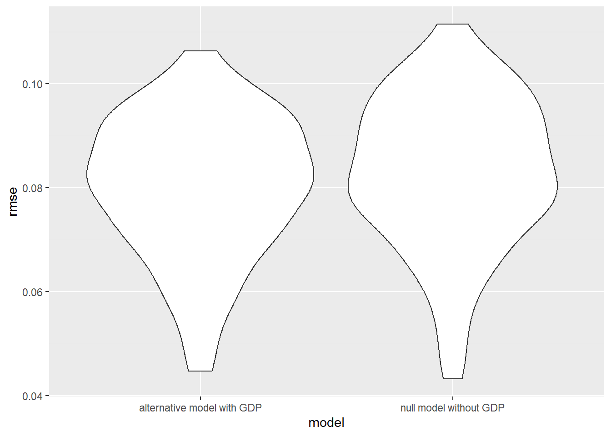

Avocado has become a more preferable and healthy choice as a source of fat nutrition source. According to USDA, U.S. demand for avocados has increased steadily over the past two decades. Per capita consumption of avocados has tripled since 2001 to 8 pounds per person in 2018. We believe that by looking into influential factors and trends regarding avocado prices, we could gain more insights into its consumption pattern and further predict its impact on people’s life and health.
We want to perform EDA to the original data, visualize any interesting trend and implement a prediction model of prices. The impact of GDP on local price and consumption of avocado will also be assessed. We also intend to include interactive visualization tool that will enable people to check on time-base or region-base information purposefully, and compare between any region of interest
We employed an avocado data set here compiled by Justin Kiggins who obtained the data source from Hass Avocado Board. Important variables includes date, average price, total volume, volume consumption by avocado size, type and region. The dates ranges from 2015-2018, the avocado size includes small, large and extra large and the type includes conventional and organic.
The GDP data set consists US GDP data by states for each year from 2013-2017.
By plotting the avocado price over time for each type of avocado, we noticed that the organic avocado has a higher price than conventional avocado over all time. In the pie plot of consumption by type, it is obvious that the conventional avocado takes over the market, but the share of organic avocado was increasing slightly year by year. We also found that, the fluctuation of avocado prices was getting greater year by year from the plot of the avocado price over each year. A shared pattern could be observed that the prices always peaks around the third quarter of the year. By visualizing both Price vs. Time and Volume vs. Time, we noticed that the volume peak was a signal for an upcoming drop in avocado prices. By visualizing avocado price across year in US by region, we found that the average prices among all regions were growing slightly year by year, but the overall price difference remains unchanged among the eight major regions. According to the Region vs. Size bar graph, we noticed all eight regions consumed extra large avocados the least. Some regions consumed more large over small ones, but some preferred the small over large ones, which was an interesting finding.
We calculated Gdp Per Capita for each region and plotted it against the average price. We found no apparent trend between these two variables. For example, California has the highest GDP per capita, but its average price was around the middle among eight regions. As for the Region GDP Per Capita vs. Avocado Consumption graph, similarly, we found no apparent trend here as well. Further inferences on GDP Per Capita were made in the regression analysis section.
For the multiple linear regression analysis, we were interested in the association between the price of avocado and several predictors. We first checked the trends of average price of a avocado by potential predictors: type, quarter, year, and region. Based on trends plot, we find that the average price of a avocado was different by the four candidate predictors. Hence, it was reasonable to consider them as predictors in modeling. In our designed model, the outcomes were quarterly_average_price, which was the average price of a single avocado within a quarter of a year. The predictors considered include type, conventional or organic avocado, year, the year of observation,quarter, the quarter of a year (there are four quarters of a year: quarter 1 stands for Jan, Feb, Mar, quarter 2 stands for Apr, May, Jun, quarter 3 stands for Jul, Aug, Sep, quarter 4 stands for Oct, Nov, Dec) and region, regions of the observation (there are 8 resgions to be considered, including California, West, Plains, South Central, Great Lakes, Northeast, Midsouth, Southeast. These 8 regions compose 48 states of the U.S., except for Alaska and Hawaii).
The model we intended to fit was:
\[ quarterly \space average \space price = \beta_0 + \beta_1type + \beta_2year + \beta_3quarter + \beta_4 region \]
| term | estimate | p.value |
|---|---|---|
| (Intercept) | -124.9400853 | 0.0000026 |
| Type:organic | 0.4831364 | 0.0000000 |
| year | 0.0624828 | 0.0000022 |
| Quarter: quarter2 | 0.0820032 | 0.0059938 |
| Quarter: quarter3 | 0.2381571 | 0.0000000 |
| Quarter: quarter4 | 0.1833036 | 0.0000000 |
| Region:GreatLakes | -0.0505655 | 0.2268371 |
| Region:Midsouth | 0.0146154 | 0.7263595 |
| Region:Northeast | 0.2192285 | 0.0000004 |
| Region:Plains | 0.0486241 | 0.2451037 |
| Region:SouthCentral | -0.2931731 | 0.0000000 |
| Region:Southeast | 0.0116896 | 0.7795317 |
| Region:West | -0.1240774 | 0.0033267 |
The results of the multiple linear regression are shown above. It turns out that the effect of organic type was significant with reference on conventional type due to a negligible p-value. And the organic type has a relatively large positive estimate value, indicating changes in the organic type variable were associated with positive changes in the response of quarterly average price at the population level. Since the average price of avocado was increasing with increased year based on the previous trend plot, we consider the year as a continuous variable. And the effect of year was significant with a p-value smaller than 0.05. The effect of quarter was also significant with p-value below 0.05 based on the reference on quarter 1, and there were increasing estimates from quarter 2 to quarter 4.
With reference on California, the effect of region was only significant for Northeast, South Central, and West. Northeast has a higher positive estimate, indicating a significantly greater influence on quarterly average price by Northeast. The estimates of South Central and West were negative, indicating a significantly negative influence on the outcome by these two regions. For the other four regions including Great Lakes, Midsouth, Plains, and Southest, their p-value was above 0.05, indicating their average prices of a quarter were not significantly different from that of California. It is also confirmed from the previous plot that the trends of these four regions were close to that of California.
The F test statistics of the model was 18.62264 with a p-value below 0.05, indicating the model was significant. The R2 of 0.8193877 was fairly good, accounting for 82% of variation in the response that is explained by the model. Regression diagnostic plots were created to check whether our model meets the assumptions of the analysis. Generally, the assumptions were all satisfied and our model is valid.
We further tested whether GDP per capita would influence the response of the average price of avocado. Since we only have the annually GDP by the 8 regions of the U.S., we decide to consider annually average price of a avocado as the outcome and remove quarter variable from the previous model. Our new null model was: \[ annually \space average \space price = \beta_0 + \beta_1type + \beta_2year + \beta_3 region \]
The alternative model with additional GDP per capita variable is : \[ annually \space average \space price = \beta_0 + \beta_1type + \beta_2year + \beta_3 region +\beta_4 gdp \space per \space capita \]
The partial F-test for nested models was performed through ANOVA to compare the small and large models. In addition, cross validation was visualized to show the value of root-mean-squared error (RMSE). The results are shown below:
| Res.Df | RSS | Df | Sum of Sq | F | Pr(>F) |
|---|---|---|---|---|---|
| 38 | 0.3570618 | NA | NA | NA | NA |
| 37 | 0.3292426 | 1 | 0.0278192 | 3.126302 | 0.0852837 |

Although the p-value of 0.085 is small, it is higher than 0.05. Hence, with a significance level of 0.05, We failed to reject the small model without the GDP per capita predictor. Given type, year, region predictors in the model, the partial R2 of the GDP per capita predictor is 0.08, which means the marginal contribution of GDP per capita to the variation in the annually average price of a avocado is only 8%. Based on the cross validation, the prediction error distributions of the two models are similar. Hence, we conclude that GDP per capita is not a significant predictor of the annually average price of a avocado. Future study of the price of avocado should be better consider the other potential predictors.